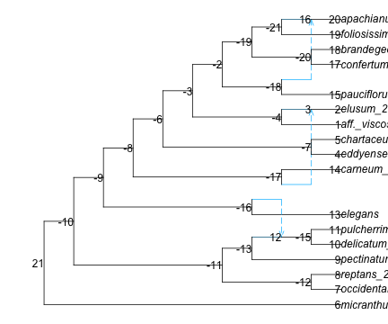
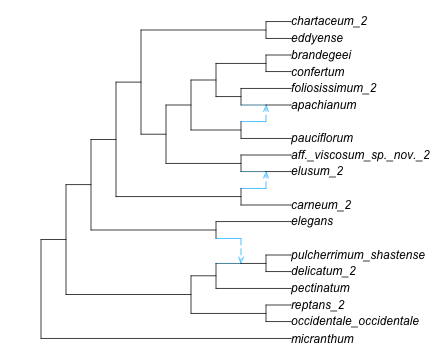

If not done during the session before, load necessary packages
Code
usingCSV# read/write CSV and similar formatsusingDataFrames# versatile tabular data formatusingPhyloNetworks# includes many utilitiesusingPhyloPlots# for plotting networks: via RusingRCall# run R within JuliausingStatsBase, StatsModels
input network
We first read the network, as shown in the ‘getting started’ section. In that section, the figure shows that the network needs to be rooted correctly, is missing some edge lengths, and that current edge lengths are in coalescent units. These units are expected to correlate poorly with time, because the number of generations per year can vary significantly between species, and the effective population size can also vary greatly across time species (e.g. bottlenecks at speciation or reticulations) and across species.
Below, the calibration method will ignore these branch lengths in coalescent units and use genetic distances instead, in average number of substitutions/site (averaged across genes).
Before moving on, let’s simplify taxon names. We have a file that gives the correspondence between tip names in the network to “morph” names in the trait data:
for tip in net_snaq.node tip.leaf ||continue# if not leaf: continue to next iternation (skip next line) tip.name = tip2morph[tip.name]end# root the network correctly. Now we can use the short namesrootatnode!(net_snaq, "micranthum") # 1 outgroup: micranthum. otherwise use rootonedge!# plot the network to see where we should rotate edges to uncross reticulationsR"par"(mar=[0,0,0,0]); # change default margins to 0res =plot(net_snaq, shownodenumber=true);res[[:xmin, :xmax]] # (0.0, 12.1) : default x limits for this networkfor nodenumber in [-16, -17,-6,-4, -19,-21]rotate!(net_snaq, nodenumber)endplot(net_snaq, xlim=[0,16]); # extend limits to show full taxon names

(a) before rotating edges

(b) after rotating edges
Figure 1: Polemonium network: rooted
input genetic distances
To calibrate the network, we need genetic distances estimated between each pair of taxa. The calibration will find edge lengths in the network to match as best as possible these input pairwise distances between taxa.
These distances were obtained by estimating a gene tree for each gene, rescaling the gene trees to decrease rate variation across genes, extracting the pairwise distances from each rescaled gene tree, then average the pairwise distances across genes (as shown previously on a small sample of genes). The results (using all genes) were saved in file data/polemonium_geneticpairwisedistances.csv, which we read below.
avD = CSV.read("data/polemonium_geneticpairwisedistances.csv", DataFrame);taxa_long =names(avD) # column namestaxa = [tip2morph[name] for name in taxa_long]
The order in which taxa appear in the matrix is important, which is why we extracted the taxa (ordered) from the column names.
avD =Matrix(avD) # converting to a matrix removes column namesavD |> maximum # max distance: ≈ 0.038 substitutions/site, averaged across genes
0.038069708207402644
run the calibration
We now have the 2 necessary inputs: the network and the pairwise distances. Below, we copy the network into a new network, whose edge lengths will be modified during calibration. We first set all edge lengths to some reasonable starting value, e.g. the maximum genetic pairwise distance divided by the number of taxa.
net =deepcopy(net_snaq)# modify branch lengths for good starting values: 0.03807 max distance / 17 taxa ≈ 0.002forein net.edgee.length = (e.hybrid ? 0.0:0.002)end
We are ready to run the calibration. Its optimization criterion is the sum of squares between the observed distances, and the distances expected from the network (weighted average of tree distances, weighted by γ’s). The calibration function modifies the network’s edge lengths directly. Below, we run the calibration 3 times to make sure branch lengths are optimized thoroughly (each one is very fast).
usingRandom; Random.seed!(8732) # for reproducibility: you can pick any other seedfmin, xmin, ret =calibratefrompairwisedistances!(net, avD, taxa, forceMinorLength0=false, NLoptMethod=:LD_MMA);fmin, ret
(0.00018470183899352304, :FTOL_REACHED)
fmin, xmin, ret =calibratefrompairwisedistances!(net, avD, taxa, forceMinorLength0=false, NLoptMethod=:LN_COBYLA);fmin, ret # if fmin increased slightly: score got worse
(0.00018617396017517004, :MAXEVAL_REACHED)
fmin, xmin, ret =calibratefrompairwisedistances!(net, avD, taxa, forceMinorLength0=false, NLoptMethod=:LD_MMA);fmin, ret
(0.00018470186946648593, :FTOL_REACHED)
Let’s check the estimated edge lengths, in units of substitutions/site for now (as were pairwise distances). We see that there are edges with tiny lengths (e.g. < 1e-5), and a few edges with tiny negative lengths.
Figure 2: Polemonium network: after calibration, edges drawn proportional to their lengths
normalize the network height
Optional: Let’s normalize our calibrated network to a height of 1, so edge lengths will be unit-less after. When we will analyze trait evolution later, we will get trait variance rates that represent variance accumulation from the root to the tips, instead of being relative to the molecular rate in substitutions/site.
To normalize our network, we need to length from the root to the tip. getnodeages! will calculate the “age” of each node, assuming that the network is time-consistent (if there are multiple paths from the root to a given node, all these paths have the same lengths) and ultrametric (all tips are at the same distance from the root). It returns the age of nodes in “pre-order”, so the root comes first.